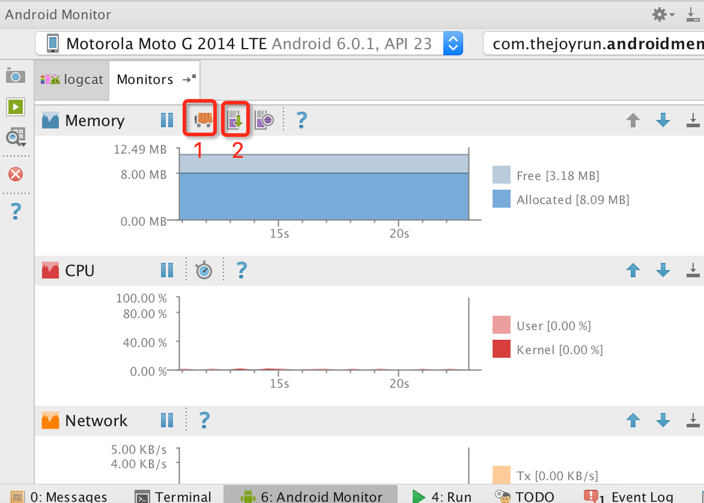
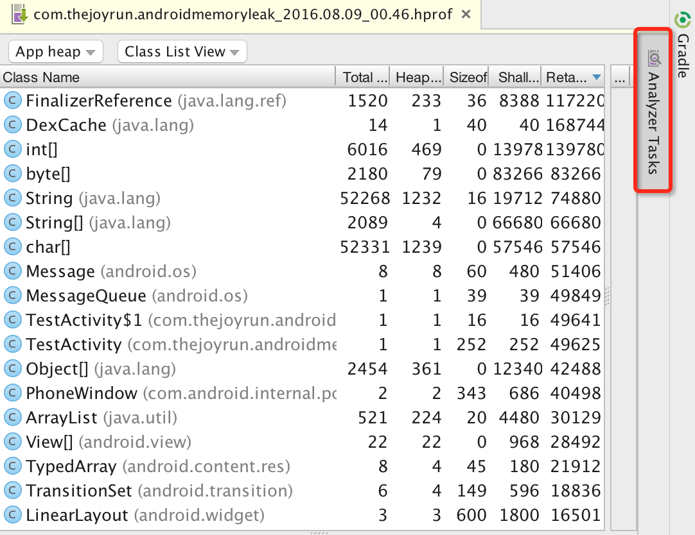
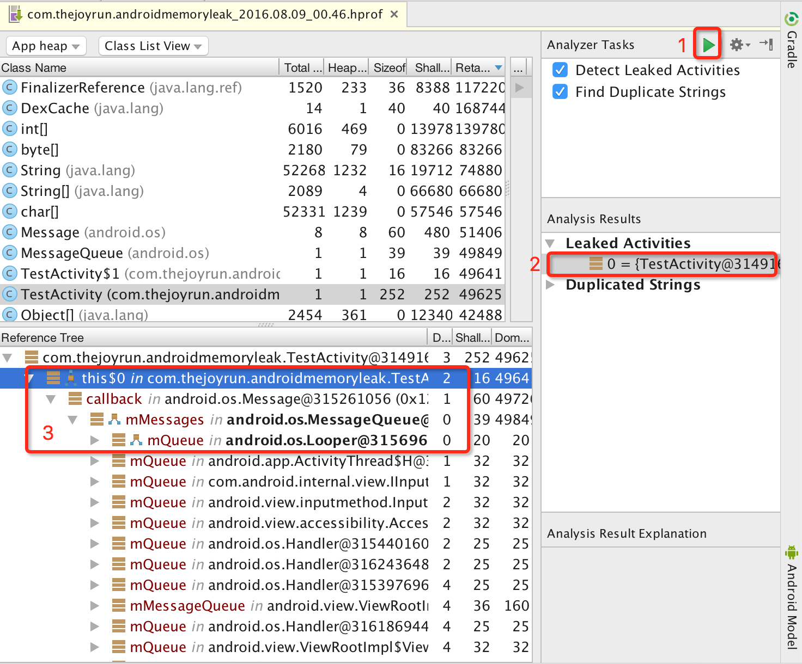
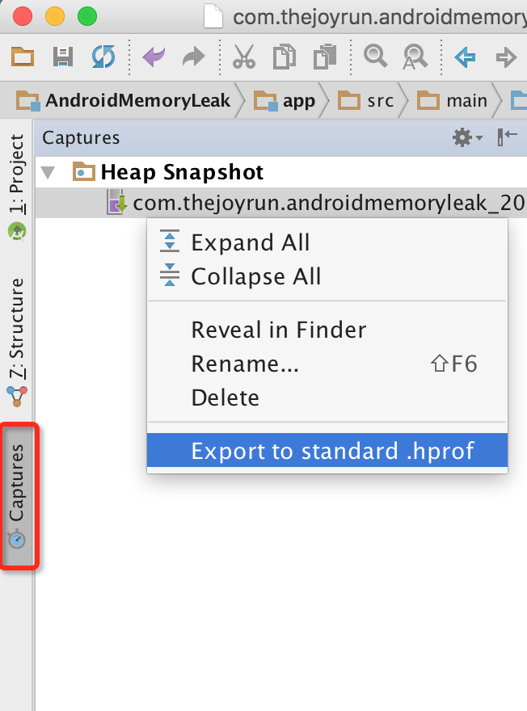
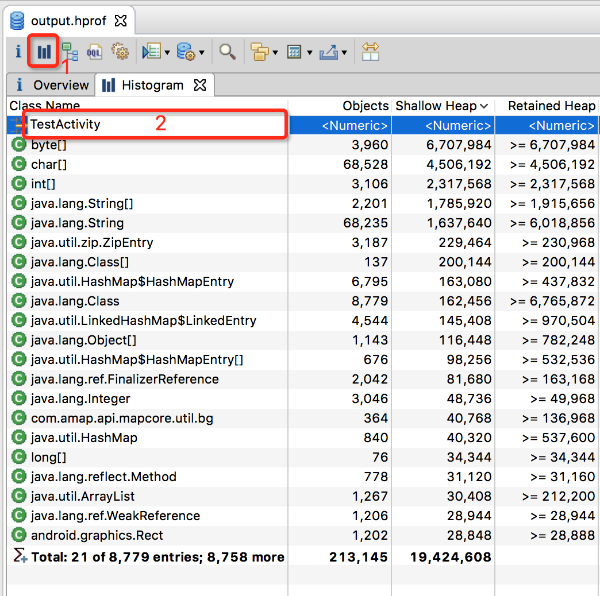
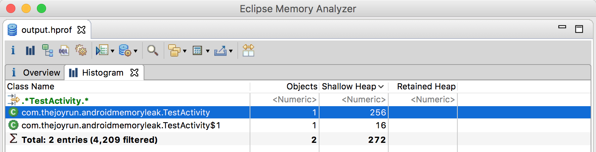
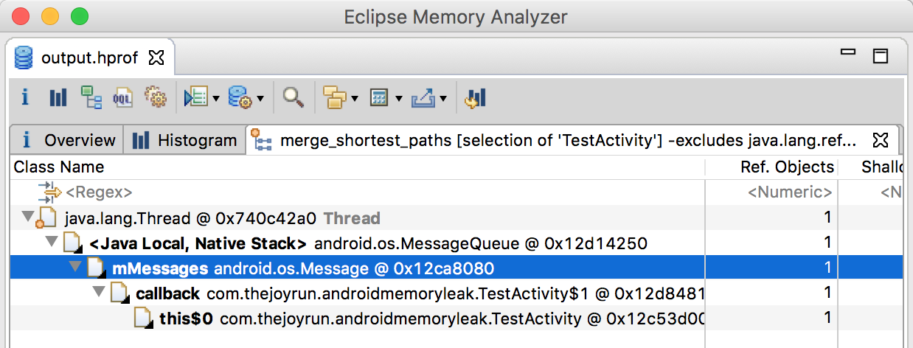

Android开发中难免会遇到各种内存泄漏，如果不及时发现处理，会导致出现内存越用越大，可能会因为内存泄漏导致出现各种奇怪的crash，甚至可能出现因内存不足而导致APP崩溃。
内存泄漏分析工具
Android的内存泄漏分析工具常用有Android Studio和基于eclipse的MAT（Memory Analyzer Tool）。通过两者配合，可以发挥出奇妙的效果。Android Studio能够快速定位内存泄漏的Activity，MAT能根据已知的Activity快速找出内存泄漏的根源。
第一步：强制GC，生成Java Heap文件
我们都知道Java有一个非常强大的垃圾回收机制，会帮我回收无引用的对象，这些无引用的对象不在我们内存泄漏分析的范畴，Android Studio有一个Android Monitors帮助我们进行强制GC，获取Java Heap文件。
强制GC：点击
Initate GC(1)按钮，建议点击后等待几秒后再次点击，尝试多次，让GC更加充分。然后点击Dump Java Heap(2)按钮，然后等到一段时间，生成有点慢。

生成的Java Heap文件会在新建窗口打开。

第二步：分析内存泄漏的Activity
点击Analyzer Tasks的Perform Analysis(1)按钮，然后等待几秒十几秒不等，即可找出内存泄漏的Activity(2)。

那么我们就可以知道内存泄漏的Activity，因为这个例子比较简单，其实在(3)就已经可以看到问题所在，如果比较复杂的问题Android Studio并不够直观，不够MAT方便，如果Android Studio无法解决我们的问题，就建议使用MAT来分析，所以下一步我们就生成标准的hprof文件，通过MAT来找出泄漏的根源。
第三步：转换成标准的hprof文件
刚才生成的Heap文件不是标准的Java Heap，所以MAT无法打开，我们需要转换成标准的Java Heap文件，这个工具Android Studio就有提供，叫做Captures,右击选中的hprof，Export to standard .hprof选择保存的位置，即可生成一个标准的hprof文件。

第四步：MAT打开hprof文件
MAT的下载地址，使用方式和eclipse一样，这里就不多说了，打开刚才生成的hprof文件。点击(1)按钮打开Histogram。(2)这里是支持正则表达式，我们直接输入Activity名称，点击enter键即可。

搜索到了目标的Activity

右击搜索出来的类名，选择
Merge Shortest Paths to GC Roots的exclude all phantom/weak/soft etc. references，来到这一步，就可以看到内存泄漏的原因，我们就需要根据内存泄漏的信息集合我们的代码去分析原因。

第六步：根据内存泄漏信息和代码分析原因
使用Handler案例分析，给出的信息是Thread和android.os.Message，这个Thread和Message配合通常是在Handler使用，结合代码，所以我猜测是Handler导致内存泄漏问题，查看代码，直接就在函数中定义了一个final的Handler用来定时任务，在Activity的onDestroy后，这个Handler还在不断地工作，导致Activity无法正常回收。
|
修改代码，避免内存泄漏
|
重新测试，确保问题已经解决。
文章代码
https://github.com/taoweiji/DemoAndroidMemoryLeak